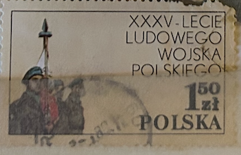
| SOURCE | TITLE| IMAGE MATCH | click to source page |
| www.ebay.com | Poland Cold War Soldiers stamp 1978 PL | eBay | 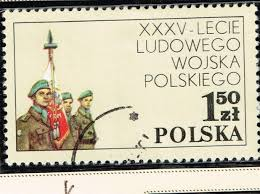 |
| www.alamy.com | Postage stamp shows 35 years Polish People's Army, from ... | 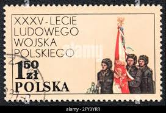 |
| www.ebay.com | POLAND -1978- 35th Anniversary of the People's Army ... | 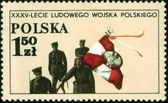 |
| www.shutterstock.com | 5+ Thousand Polish Postage Stamps Royalty-Free Images, Stock ... | 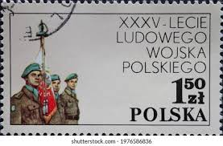 |
| www.hipstamp.com | Poland used Military set | Europe - Poland, Stamp / HipStamp | 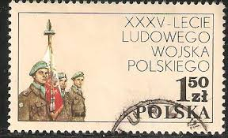 |
| www.etsy.com | Poland Hussars Stamps: Jan II Sobieski, Vienna Victory FDC ... | 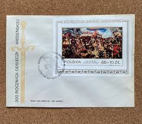 |
| www.dreamstime.com | Paintings Polish People S Army, 25th Anniversary Editorial ... | 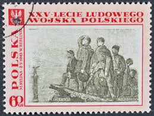 |
| www.alamy.com | Postage stamp shows 35 years Polish People's Army, from ... | 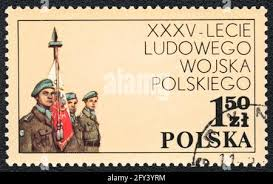 |
| www.ebay.com | Poland 2289-2291, MNH. Michel 2578-2580. People's Army, 35th ... | 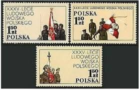 |
| www.etsy.com | Polish Army Stamps FDC 1985: 40th Anniversary Set - Etsy | 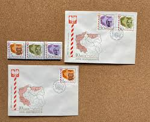 |
| www.linns.com | Inside Linn's: An introduction to stamps and souvenir sheets ... | 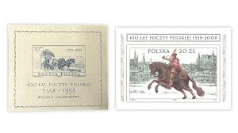 |
| www.buyhungarianstamps.com | 278 Poland - 1933 John III Sobieski and Allies Before Vienna ... | 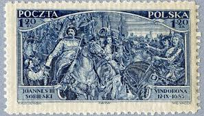 |
| www.alamy.com | Postage stamp from Poland depicting the Color Guard of the ... | 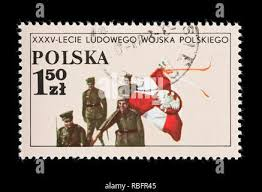 |
| www.freestampcatalogue.com | Stamps from Poland - Freestampcatalogue.com - The free ... | 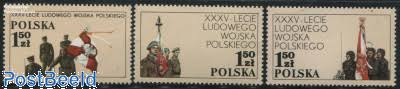 |
| www.dreamstime.com | Polish Unit, UN Middle East Emergency Force, 35th Anniv. of ... | 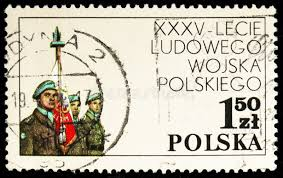 |
| www.lituanicaonstamps.com | LituanicaOnStamps.com | 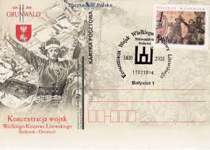 |
| info.mysticstamp.com | Death of General Thaddeus Kosciuszko | Mystic Stamp ... | 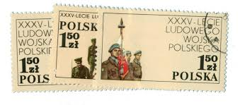 |
| www.jaysmith.com | Jay Smith & Associates: Slania: Poland: Non-Stamp Engravings | 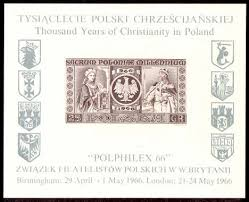 |
| www.hipstamp.com | Poland 1983 FDC Stamps Souvenir Sheet Scott 2587 King John ... | 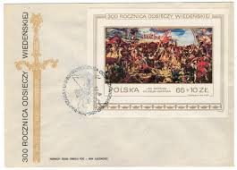 |
| worldstampsproject.org | Postage stamp varieties of the Polish People's Republic ... | 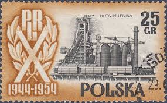 |
| www.youtube.com | Learn the History of Poland: Between Crown 👑 and Sejm 1501 ... | |
| www.lastdodo.com | Ludwik Warynski [1856-1889] Stamp catalogue - LastDodo | 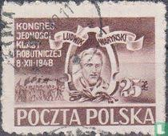 |
| www.shutterstock.com | Lodz Poland Circa 1968 Stamp Printed Stock Photo 504321553 ... | 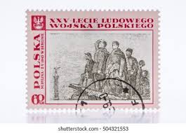 |
| postalmuseum.si.edu | Germany Invades Poland, WWII Begins--September 1, 1939 ... | 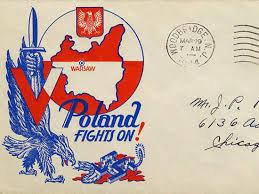 |
| www.smithsonianmag.com | Sarkozy's Not the First World Leader to Collect Stamps |  |
| www.allnumis.com | 100 Zloty - Glowy Wawelskie, Person-Personaly-Man - Poland ... | 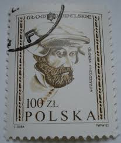 |
| www.amazon.com | 400 LAT POCZTY POLSKIEJ: (postal history): Amazon.com: Books | 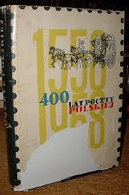 |
| www.facebook.com | Dawn broke on June 24, 972 AD, along the misty banks of the ... | 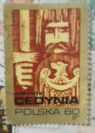 |
| www.jaysmith.com | Jay Smith & Associates: Slania: Poland: Stamps | 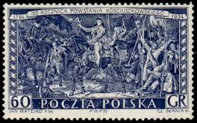 |
| stamped.pub | Stamp Trek — Collecting Poland by Thomas Bieniosek - stampEd | 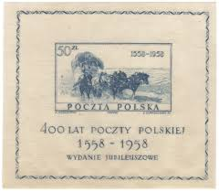 |
| info.mysticstamp.com | Death of General Casimir Pulaski | Mystic Stamp Discovery Center | 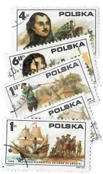 |
| app.biistamp.com | Polish Stamps for Sale - Standard Price List | Bieniecki ... | 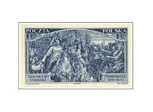 |
| findyourstampsvalue.com | Value of xxv-lecie ludowego wojska polskiego stamps | 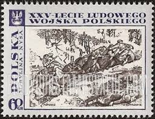 |
| www.ebay.com | Poland Stamp Issue 2019 (SS 284) The First Days of ... | 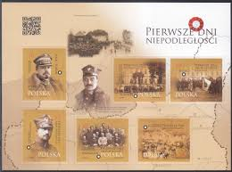 |
| www.buyhungarianstamps.com | Poland – Eastern Europe Postage Stamps | Hungaria Stamp Exchange | 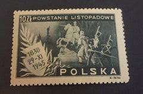 |
| www.allnumis.com | 1,50 Złoty 1973 - Tombstone of Nicolas Tomicki, 1973 ... | 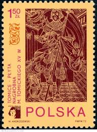 |
| mapsonstampsdb.com | Maps on Stamps : Polish corps in Italy | A Database of ... | 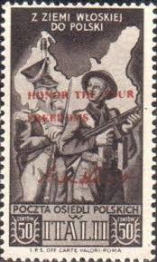 |
| www.dreamstime.com | Paintings Polish People S Army, 25th Anniversary Editorial ... | 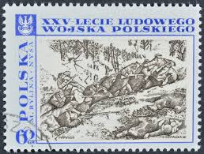 |
| ourpassports.com | WW2 Polish passport from the Soviet Union - Our Passports | 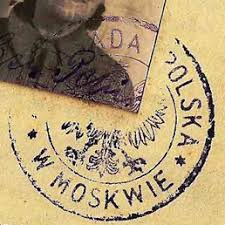 |
| www.lituanicaonstamps.com | LituanicaOnStamps.com | 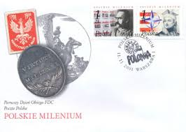 |
| www.reddit.com | This is a document that belonged to my Polish grandfather ... | 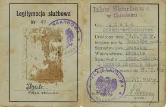 |
| postalmuseum.si.edu | Poland | National Postal Museum | 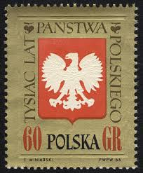 |
| eng.ipn.gov.pl | The celebrations of the 75th anniversary of the death of ... | 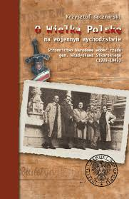 |
| holzmanantiques.com | 1984 Day of the Polish Army Poster Krakow | Holzman Antiques | |
| www.talesfromawargameshed.com | Blog Archives - TALES FROM A WARGAME SHED | 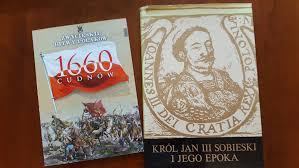 |
| www.philatelicly.com | Rarest Stamps: Most Valuable Polish Stamps – Philatelicly | 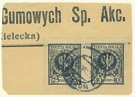 |
| www.facebook.com | The Polish Legions of the Austro-Hungarian Army in WWI ... | 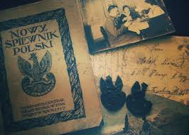 |
| www.sas.rochester.edu | Newsletter 2013 | The Skalny Center for Polish and Central ... | |
| www.abebooks.com | Republic of Poland Twenty Year Six Per Cent U.S. Dollar Gold ... | 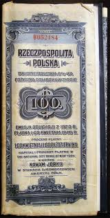 |
| www.militaryphs.org | Polish Forces in Exile During and Following World War II ... | 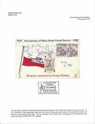 |
| www.libraryhistorybuff.com | Libraries | 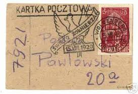 |
| commons.wikimedia.org | File:Jeszcze Polska nie zginęła Cz.2 (page 7b crop).jpg ... | 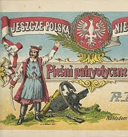 |
| www.gettyimages.com | 669 Volyn Stock Photos, High-Res Pictures, and Images ... | |
| www.stampsandstuff.net | Stamps from Poland 1950-1959 | 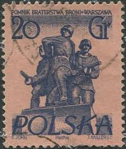 |
| sarmatia-antiques.com | WW2 Pair of Polish People's Army Conspiracy Organization ... | |
| www.polishmuseumofamerica.org | 158 anniversary of the Polish January Uprising | PMA | |
| en.wikipedia.org | Postage stamps and postal history of Poland - Wikipedia | |
| platform.keesingtechnologies.com | Poland releases collectors' edition banknote - Keesing Platform | |
| colnect.com | Stamp: Niedzica castle (Poland(Historic buildings from the ... |
.jpg){kind=link}